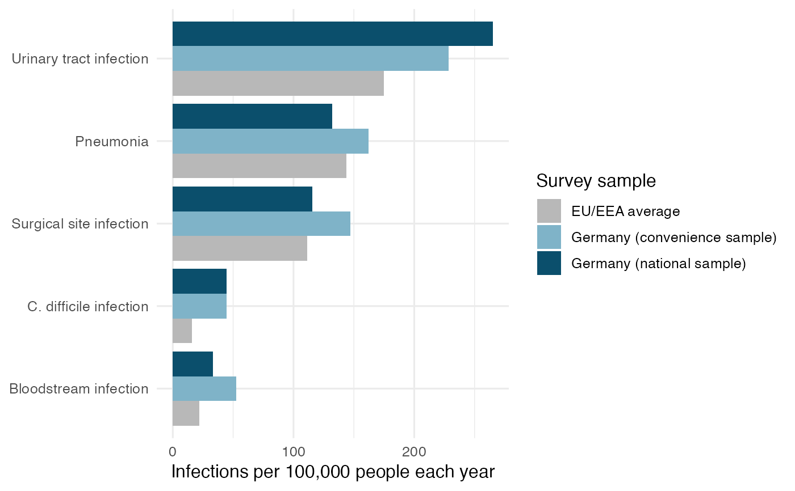
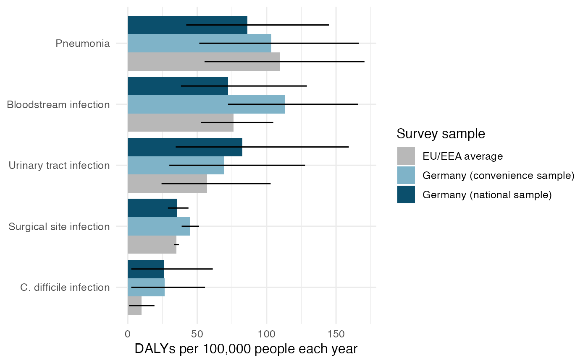

Draws one bar for each infection and survey sample. The bars are sorted
so that the largest burden is at the top.
Usage
plot_burden(data, burden_measure = "DALYs", show_interval = FALSE)
Arguments
- data
A data frame with the same columns as hai_burden.
- burden_measure
The measure to plot. One of "Infections", "Deaths"
or "DALYs".
- show_interval
If TRUE, adds the 95% uncertainty interval to each bar.
Value
A ggplot2 plot object.
Examples
plot_burden(hai_burden, burden_measure = "Infections")

# Urinary tract infection has the most cases
plot_burden(hai_burden, burden_measure = "DALYs", show_interval = TRUE)

# Bloodstream infection moves up when harm is measured